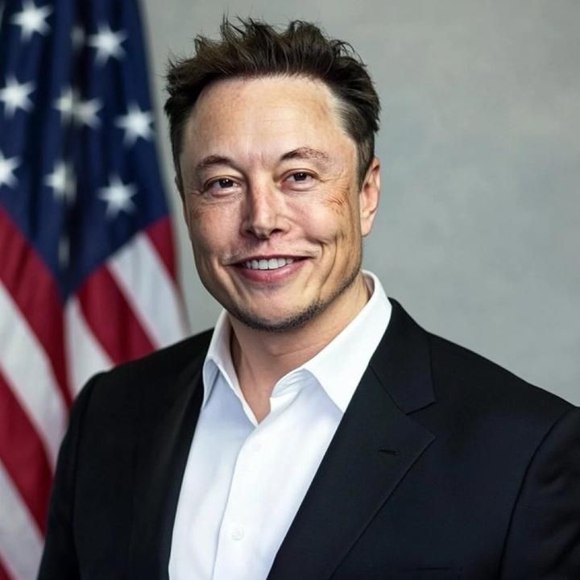

Илон Рив Маск (род. 28 июня 1971, Претория, ЮАР) — предприниматель, инженер и изобретатель. Один из самых богатых людей в мире.
Он является основателем и генеральным директором компании SpaceX, а также генеральным директором компании Tesla.
Илон Маск родился в Южной Африке. В детстве он увлекался компьютерами и чтением. В 12 лет он продал свою первую компьютерную игру за 500 долларов. Позже он переехал в США, где окончил университет и начал заниматься бизнесом.
В 1995 году он переехал в Калифорнию, чтобы поступить в Стэнфордский университет, но бросил учебу через два дня, чтобы основать свою первую компанию.
В 1999 году Маск основал компанию X.com, которая позже стала платежной системой PayPal. В 2002 году он основал SpaceX, которая занимается разработкой космических ракет. В 2004 году он возглавил компанию Tesla, производящую электромобили.
Также он основал компанию Neuralink, которая занимается разработкой интерфейсов «мозг-компьютер», и The Boring Company, которая строит туннели для транспорта.